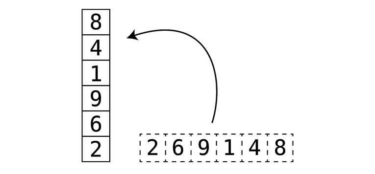

class TonyIntStack:
def __init__(self):
self.data = []
print("A stack object has been created!")
def push(self, new_element:int):
self.data.append(new_element)
print(f"push({new_element}): {new_element} added to stack: {self.data}")
def pop(self):
if len(self.data)>0:
popped = self.data.pop()
print(f"pop(): {popped} removed from stack: {self.data}")
else:
print(f"pop(): it's empty stack: {self.data}")
def read(self):
if len(self.data)>0:
top = self.data[-1]
print(f"read(): {top} is at the top of the stack: {self.data}")
return self.data[-1]
else:
print(f"read(): it's empty stack! {self.data}")

1. Stacks & Queues (S & Q’s)
stacks and queues are arrays with restrictions.
(Queues discussed in detail on a separate post)
1.1 Use-Cases
S & Q’s are great for handling temporary data such as:
- operating system architecture
- printing jobs
- traversing data
- a chef receiving menu orders
1.2 Importance Of Order
- Stacks and Queues a special focus on the order in which the data is handled.
1.3 Temporary data - Orders Sent To A Kitchen
Temporary data are like the food orders sent to diners kitchen for a chef to cook:
- The food order is important until the meal is made and delivered.
- The chef only requires the food order (the items to be cooked), not a receipt.
- After order fulfilled (or processed), the food order slip is thrown away.
- The food order produces a receipt but that is a separate thing from the food order itself.
- The chef does not cook a dish based on a receipt (generally):
- May include information not required by the Chef such as Prices, Taxes, Fees and other.
1.4 It is Temporary…
The data will have some meaning before being processed.
The data will be processed.
After data is processed:
- The data has no meaning
- The data is deleted (since it has no meaning, why keep it)
2. Stacks
2.1 Stacks - Array vs Stack
Visually a stack is like an array tilted rotate up 90 degrees.
- Start of the array
2becomesbottomof the stack - End of the array
8becomestopof the stack
2.2 Stacks - Array vs Stack Visual

2.3 Stacks - Operation Restrictions
A stack is an array with three restrictions:
Insertion or
push():- only at the end (top) of a stack.
Deletion or
pop():- only from the end (top) of a stack.
Read or
read():- only the last (top) element of a stack.
2.4 Stacks - Operational Visual

2.4.1 My Psuedo
1a. Create [stack] class
2a. [instance attribute] [self.data]: [] (type: list)
3a. [instance method] push(element):
- 3b. add [element] to [self.data]
4a. [instance method] pop():
- 4b. check len(self.data) > 0
- 4c. return [self.data.pop()]
5a. [instance method] read():
- 5b. check len(self.data) > 0
- 5c. return self.data[-1]
2.5 Stack Class Implementation
2.6 Test the stack object
tony_stack = TonyIntStack()
tony_stack.read()
tony_stack.push(12)
tony_stack.push(345)
tony_stack.pop()
tony_stack.read()
tony_stack.push(666)
tony_stack.push(789)
tony_stack.read()
tony_stack.pop()
tony_stack.read()
tony_stack.pop()
tony_stack.pop()
tony_stack.pop()
tony_stack.pop()
A stack object has been created!
read(): it's empty stack! []
push(12): 12 added to stack: [12]
push(345): 345 added to stack: [12, 345]
pop(): 345 removed from stack: [12]
read(): 12 is at the top of the stack: [12]
push(666): 666 added to stack: [12, 666]
push(789): 789 added to stack: [12, 666, 789]
read(): 789 is at the top of the stack: [12, 666, 789]
pop(): 789 removed from stack: [12, 666]
read(): 666 is at the top of the stack: [12, 666]
pop(): 666 removed from stack: [12]
pop(): 12 removed from stack: []
pop(): it's empty stack: []
pop(): it's empty stack: []